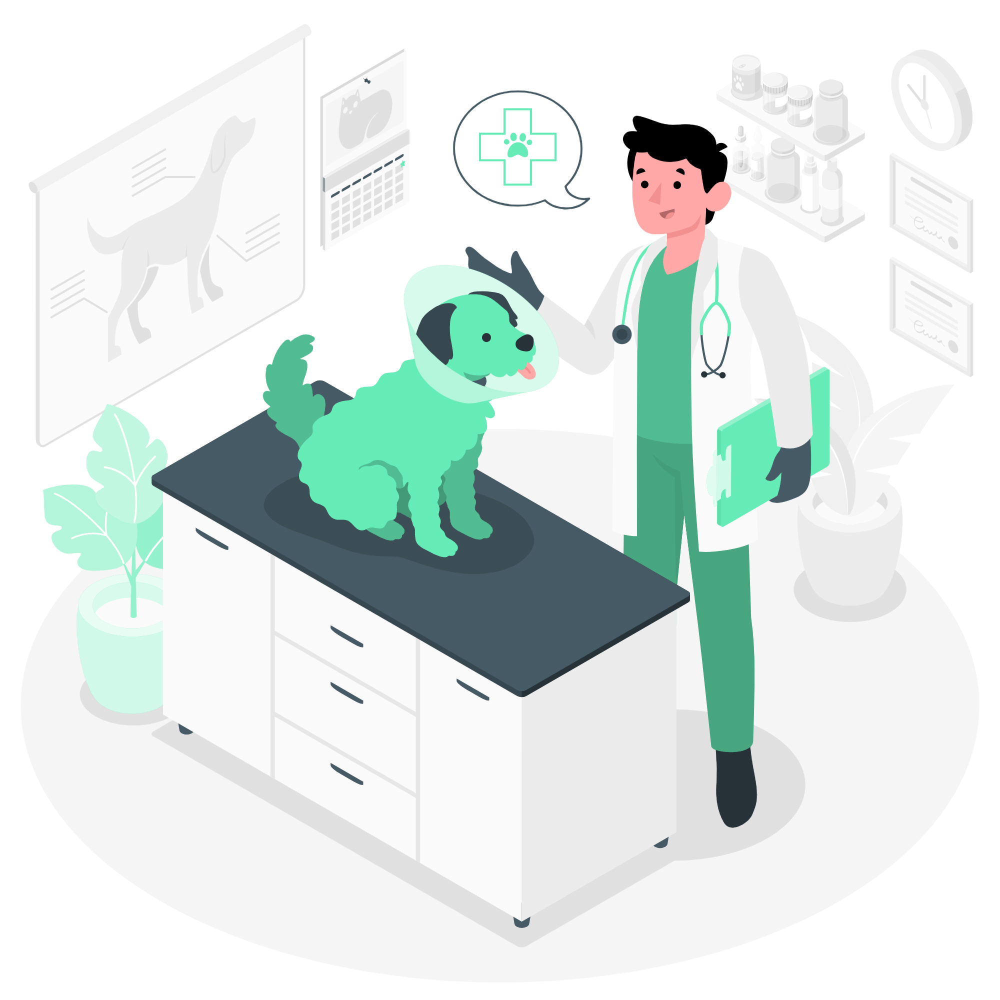
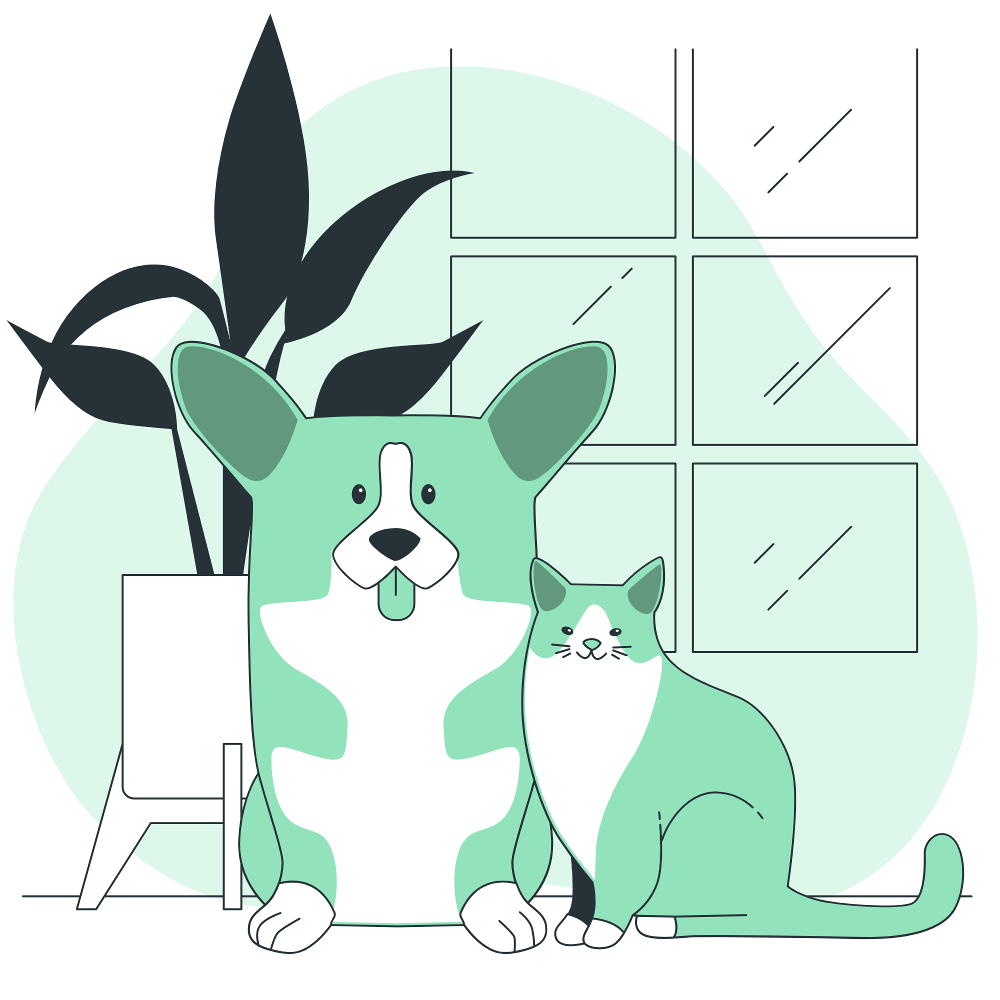
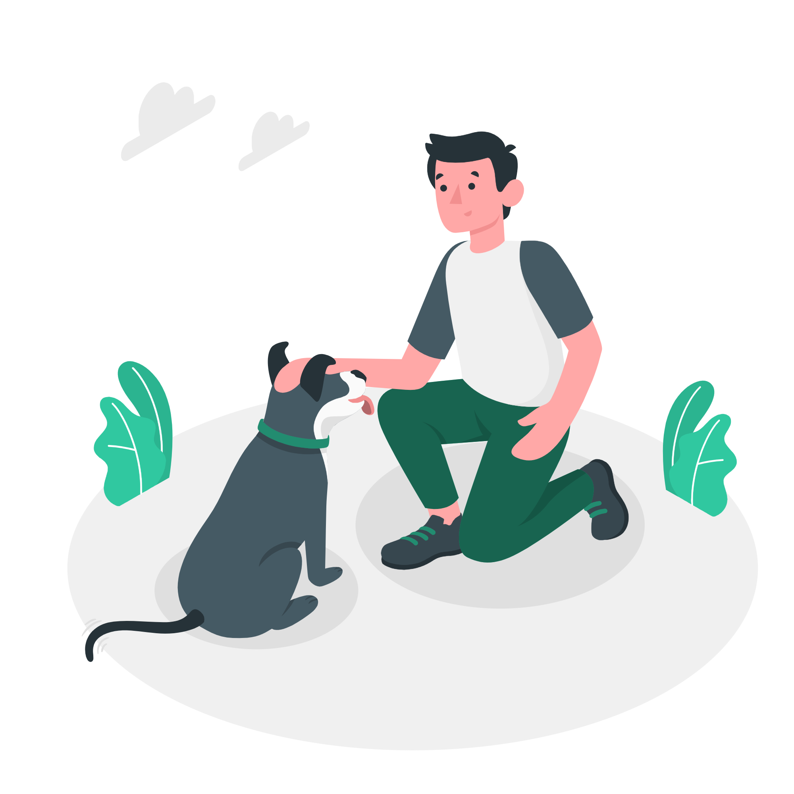

Agendar Consulta
Aqui voce pode agendar consultas para os Pets já cadastrados na Aba
Cadastrar Pets.
Agende sua Consulta
Ferramentas:

Meus Pets
Aqui voce pode consultar seus Pets já cadastrados
e trocar algumas informações deles.
Ver Meus Pets

Cadastrar Pets
Aqui voce cadastra os Pets para que possamos
agender a sua consulta.
Cadastrar Pets